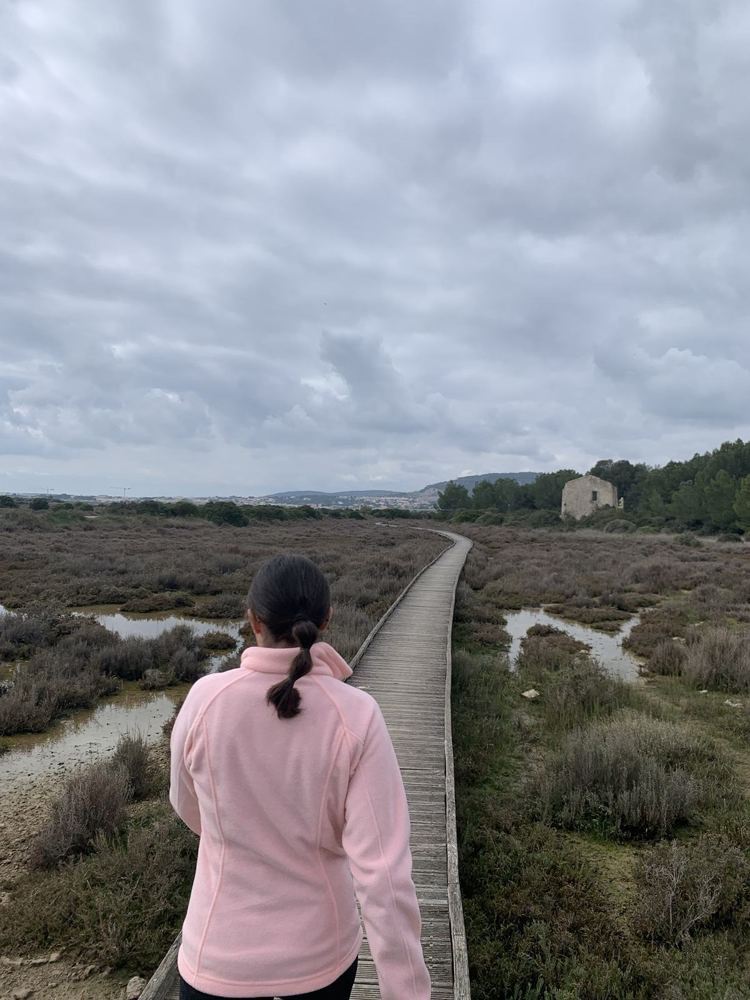
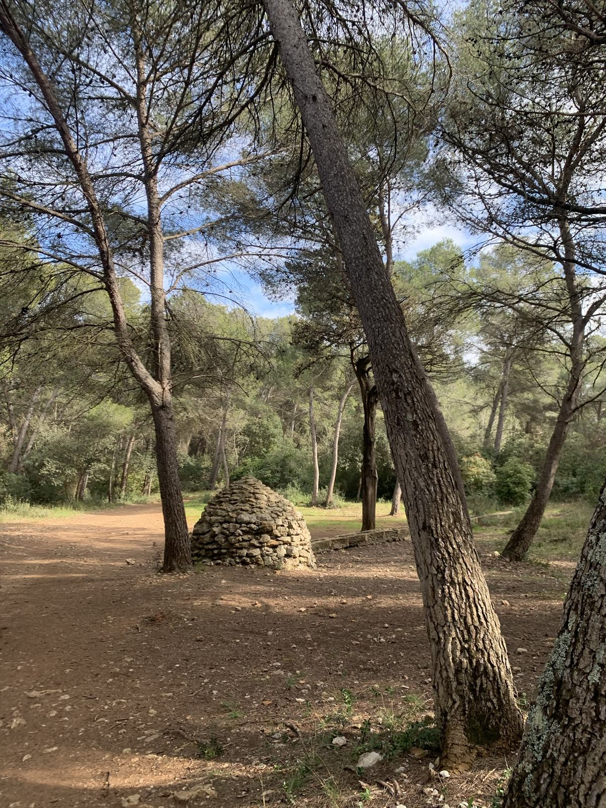
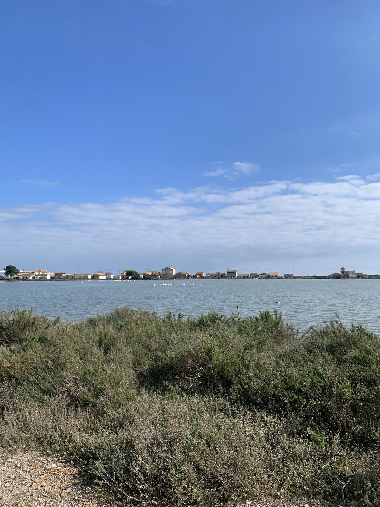
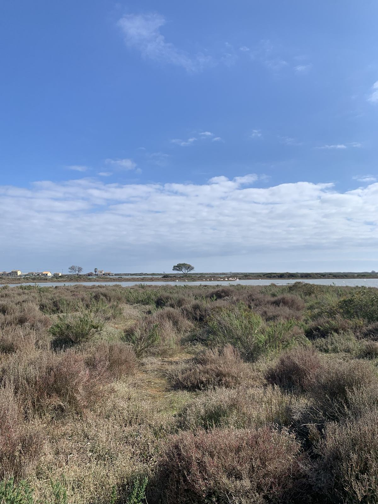

📋 Fiche technique
- 🥾 Pratique : rando, balade en famille
- 📏 Distance : 10,6 km • ⬆️ quasiment plat
- ⏱️ Rando : 2h30 à 3h
- 📍 Départ : Frontignan [à préciser]
- 💪 Difficulté : facile
- 💧 Points d’eau : [à compléter]
🚶 Le parcours
[Débrief d’Adrien à venir : déroulé de l’itinéraire, points forts, ambiance.]
📸 En images




⚠️ Points d’attention
- [Points d’attention à compléter : vent, moustiques en été…]
💡 Mes conseils
- [Conseils à compléter]
📹 La vidéo
[Lien de la vidéo à ajouter]
🧰 Pour préparer votre sortie (points d’eau, ravitaillement…), jetez un œil à ma page Outils.